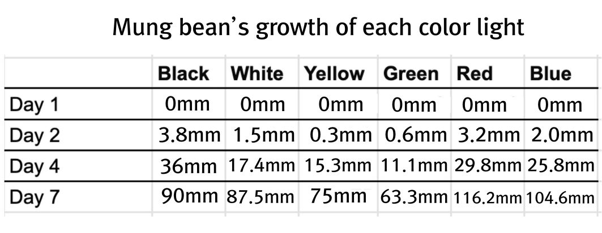
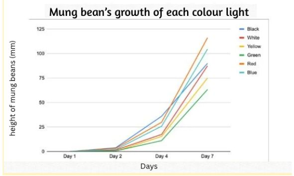
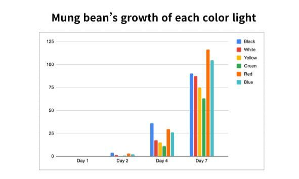

|
Abstract, Variables, Hypothesis, Introduction & purpose
|
|
Prior knowledge, Background information, Procedure, What do we expect?
|
|
Set-up, RIsk assessment, Material
|
|
Processed data, Graphs, Discussion
|
|
Conclusion, Results, Credits
|
|
Processed data 📈: 
Graphs 📊: 

Discussion 🔥:
Strength: This experiment is useful because it shows how different light colors affect plant growth, helping us understand photosynthesis more clearly.
The results can be applied to real-life situations such as improving plant growth in greenhouses or indoor farming.
The method was controlled (same amount of water, number of beans, and environment), which increases the reliability of the results.
Having six different groups (including a control like white and black light) strengthens the validity of the conclusions by allowing better comparison between conditions.
This experiment is also helpful as it helps us identify more about which light we should use when planting plants, which can be really helpful in the future.
Limitations:The experiment only lasted 7 days, which may not show long-term growth differences. This could be improved by running the experiment for a longer period (e.g., 2–3 weeks).
Only 5 mung beans were used per group, which is a small sample size. This could be improved by using 10 or more seeds per group to increase reliability.
Sunlight intensity may have changed each day, affecting results. This could be improved by using a controlled light source instead of natural sunlight.
The colored films may not have produced pure light colors. This could be improved by using LED lights with specific wavelengths.
Measuring plant height may have included small errors due to curved sprouts. This could be improved by using more precise measuring tools or measuring multiple times and averaging.
|